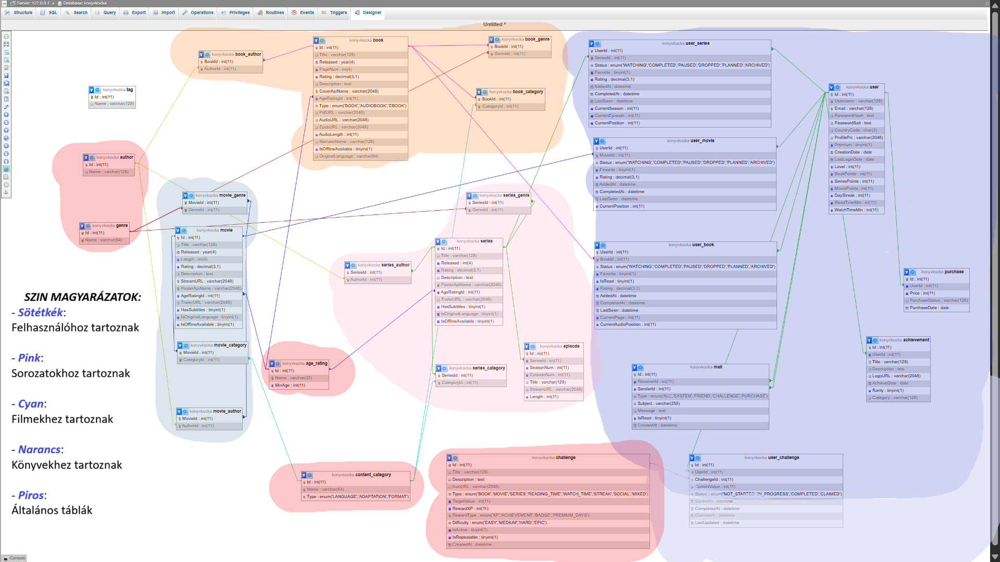
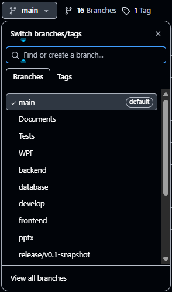
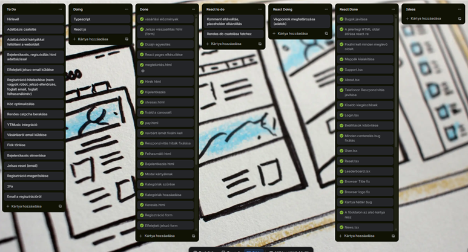

1 / 15
‹
›

Könyvkocka Project 2025 V0.2 Snapshot
Januári Bemutató - Frontend Stabilizálás
🎬 Projektünk
- Netflix-inspirált streaming platform
- Filmek, sorozatok, könyvek egyaránt
- Ingyenes és prémium tartalom
- Választás könyv és film között
⚙️ Technológiai Stack
💻 Frontend
React + TypeScript
Vite Build Tool
⚡ Backend
ASP.NET
REST API
🗄️ Adatbázis
MySQL
Feltöltésre vár🛠️ Eszközök
GitHub, Trello
VS Code
Visual Studio
Frontend Fejlesztés
💻
80%
- React + TypeScript alapokra lett átalakítva (minden korábbi oldal újraírva)
- Állapotkezelés és struktúra előkészítve backend csatlakozáshoz
- LocalStorage-alapú autentikáció ideiglenes megoldásként
- Teljes reszponzivitás mobilon és asztali megjelenítésen
✅ Implementált Frontend Funkciók
🏠 Alapstruktúra
- Navbar, footer
- Főoldal: kártyák modál megnyitással
- Profilképes dropdown bejelentkezéskor
🔐 Autentikáció
- Bejelentkezés / Regisztráció
- Elfelejtett jelszó / Visszaállítás
- Captcha támogatás
📄 Oldalak
- Megtekintés / Olvasás oldal
- Könyvtáram / Előzmények
- Ranglista / Kihívások
💳 Egyéb
- Keresés oldal szűrőkkel
- Vásárlások / Előfizetések
- Értesítések / Támogatás
Adatbázis Fejlesztés
🗄️
85%
- MySQL adatbázis - teljes szerkezet elkészült
- Táblák és kapcsolatok definiálva, normalizálva
- Tesztadatok előkészítve, éles adatok feltöltésre várnak
- Backend integrációra előkészítve (API végpontokhoz)
🗄️ Adatbázis Struktúra - EER Diagram

Backend Fejlesztés
⚡
25%
- ASP.NET Core REST API - tervezési fázis kész
- Összes végpont megtervezve és dokumentálva
- API struktúra és útvonalak definiálva
- Implementáció hamarosan elkezdődik
⚠️ Ismert Hiányosságok
- Backend és valódi adatbázis még nem csatlakozik
- LocalStorage csak ideiglenes megoldás
- Email küldés továbbra sem elérhető
- Hibakezelés (error state-ek, visszajelzések) részben hiányos
- Egyes adatok statikusan mockolva vannak
👥 Csapatmunka & Eszközök
- Frontend Fejlesztő - Bordás Dániel
- Backend Fejlesztő - Dudás Ádám
- Adatbázis Kezelő - Mihalik Hanna
🔧 GitHub Repository

A projekt verziókezelése GitHubon történik. Több branch-en dolgozunk párhuzamosan:
develop, feature/*, backend és adatbazis
📋 Trello Tábla

A feladatok nyomon követése Trello táblán történik.
Külön listák a feladatok állapotának megfelelően: To Do, Doing, Done
🚀 Következő Lépések
🔗 Integráció
- Adatbázis csatlakoztatása
- Backend végpontok (API) integrálása
- Valódi autentikáció bevezetése
💾 Adatkezelés
- Adatok mentése adatbázisba
- Email értesítések bevezetése
- Hibakezelés javítása
🧪 Tesztelés
- Integrációs tesztek (Frontend-Backend)
- API végpontok tesztelése
- Adatbázis műveletek validálása
✅ Finomhangolás
- Teljesítmény optimalizálás
- Biztonság
- Felhasználói visszajelzések
✨